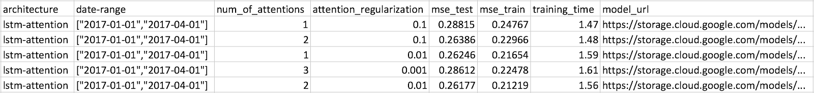
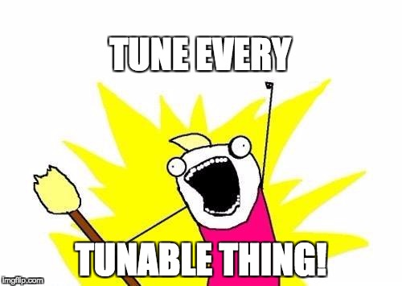

This post was originally published by me at the Taboola engineering blog.
Now that more than a year has passed since our first deep learning project emerged, we have had to keep moving forward and delivering the best models we can.
Doing so has involved a lot of research, trying out different models, from as simple as bag-of-words, LSTM and CNN, to the more advanced attention, MDN and multi-task learning.
Even the simplest model we tried has many hyperparameters, and tuning these might be even more important than the actual architecture we ended up using - in terms of the model's accuracy.
Although there's a lot of active research in the field of hyperparameter tuning (see 1, 2, 3), implementing this tuning process has evaded the spotlight.
If you go around and ask people how they tune their models, their most likely answer will be "just write a script that does it for you". Well, that's easier said than done...
Apparently, there are a few things you should keep in mind when implementing such a script.
Here, at Taboola, we implemented a hyperparameter tuning script. Let me share with you the things we learned along the way...
Let's start simple
Sometimes using scikit-learn for hyperparameter tuning might be enough - at least for personal projects.
For long term projects, when you need to keep track of the experiments you've performed, and the variety of different architectures you try keeps increasing, it might not suffice.
Bare bones
The first version of the script was simple, but encompassed most of our needs. The requirements were:
Easy to run
You are going to run this script many times. So, it should be as easy as possible to specify what experiments you want to run.
We ended up with the following JSON format:
{
"architecture": "lstm-attention",
"date-range": [["2017-01-01", "2017-04-01"]],
"parameters": {
"num_of_attentions": [1, 2, 3],
"attention_hidden_layer_size": [32, 128, 256],
"attention_regularization": [0.1, 0.01, 0.001]
}
}
- architecture: architecture you want to tune, assuming your code supports multiple types
- date-range: list of tuples, each defines a time range that will be used to train a model. Each experiment will be executed once per date-range
- parameters: values to try for each hyperparameter. Our initial implementation only supported a finite set of values (grid search)
The script randomly generates experiments out of this JSON.
We created a Jenkins job that runs the script on one of our machines with GPUs, thus freeing us from the need to use SSH.
Enrich experiments with metrics
Our training process generates many metrics, such as MSE, loss and training time. You can choose whichever you want, and they will show in the results.
Save results to the cloud

Results are saved as a CSV file in Google Cloud Storage, which enables us to launch the script from any machine, and watch the results from our laptops.
The results are continuously uploaded, so we don't have to wait for all the experiments to finish to start inspecting the results.
The models themselves are also saved.
So what have we learned so far?
This first implementation was the most important one.
Being simple, the script didn't do anything smart for you. It didn't specify which experiments to perform - you had to manually define the JSON input for every run.
After running the script many times, you start to understand which values work better than others. It's one of the most important things we got from the script - a more in depth understanding of our models.
Using this script for the first time got us a big improvement - the MSE dropped by more than 10%.
Are we sure it's real?
When you run hundreds of experiments, the best ones usually have negligible differences. How can you know it's statistically significant?
One way to tackle this problem, assuming you have enough data, is to train the same model on several date-ranges. If one model is better than the others in all of the date-ranges, you can be more confident it's real.
Let's say today is June, and you run the script. Here are the date-ranges the script will choose:

Note that the script chooses a new set of date-ranges if you run it on a different month. This is important, since otherwise you could accidentally overfit your models due to extensive hyperparameter tuning.
I don't have time for this
Who has the time to run every experiment three times? It's nice that you can get reliable results, but it means you'll end up running fewer different experiments.
The next version of the script tackled this problem by supporting a new mode of operation:
- Only one date-range is used
- The date-range contains only one month of data
- Training is limited to fewer epochs
But are the results correlated with what we would get if we used more data and epochs?
To answer this, we performed some experiments, each using a different amount of data ranging from one week to three months. We found out that one month had a good tradeoff between MSE and training time.
(Did you notice we used the hyperparameter tuning script to tune the hyperparameter script? How cool is that?)
To investigate what the right number of epochs would be, we analyzed the MSE on TensorBoard.

Each plot in the graph represents a different model trained on a different amount of data. After 20 epochs all of the models have almost converged, so it's safe to stop there.
C'mon script, do the job for me!
At this point we decided the script should choose the hyperparameter values for you. We started with the learning rate related hyperparameters: initial learning rate, decay factor, number of epochs with no improvement for early stopping, etc.
Why learning rate?
- It significantly affects training time. We should first settle on a good learning rate, both in terms of accuracy and training time, before tuning all the rest
- Some suggest it controls the effective capacity of the model in a more complicated way than other hyperparameters, so it might be better to start with that.
The new mode of the script uses hard-coded ranges of values that are reasonable for our models.
Then came the next demand:

The next version of the script did just that: provided with an architecture name, it automatically generates experiments for you. You don't need to specify any hyperparameter values.
Let's go random
Although being worse than random search in some cases, grid search is easier to analyze: every value is used by multiple experiments, so it's easy to spot trends.
Since we had already gained intuition on what values work better, it was time to implement random search. Doing so helped the script find better hyperparameters.
Some final thoughts
In the research phase of any machine learning project, hyperparameter tuning can be done manually. However, when you want to take the project to the next level, it's highly effective to automate the process. In this post I described some of the small touches we implemented into the automation process. Some might be useful for you, some might not. Drop a line in the comments if you found any other exciting things to be helpful.
Comments !